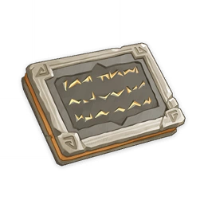

Nod-Krai · Books & Literature
Moongazer's Engraving
Moongazer’s Engraving preserves two lunar messages: Lusalim’s digest of the Stellar Blackbody and Nin-Kiggia’s translation of a warning from Ysna’qurel’s empire.

Two translated lunar messages
Moongazer’s Engraving is a two-volume record described as an ancient stone tablet found on the moon. Its writing is said to be indecipherable, even though readers somehow understand it in their own language. Volume I is explicitly a digest; Volume II is presented as a verbatim translation of an earlier message.
The distinction between the two editors and their methods matters: one text selects key information, while the other preserves a much longer account and adds a note about uncertainty.
Lusalim’s digest and the Stellar Blackbody
Volume I identifies its text as a translated digest of a message conveyed by the “Stellar Blackbody.” The message reaches out to a civilization on another world, describes “pitch-black annihilation” moving through the universe, and frames its own transmission as a light meant to help another people face the unknown.
A closing note to Lusalim’s “daughter,” Ninnin, says the key assistance for their plans lies at the lunar core and can be reached through fissures. The book does not explain the project in full; the Moon Gazing quest supplies the surrounding records.
Nin-Kiggia’s translation and Ysna’qurel
Volume II is Nin-Kiggia’s verbatim translation of the first message received. A long historical or mythical account describes Ysna’qurel defeating seven monsters or compatriots and bringing the world under an empire. Near the end, a messenger is sent beyond that empire to warn other worlds of a “Dark Destroyer” and a coming decline.
Nin-Kiggia’s note says the connection between this empire and the civilization of the Stellar Blackbody cannot be verified. That explicit caveat is part of the book’s content, so the two messages should not be fused into a single confirmed origin story.
Project Moongazer in the quest record
The Moon Gazing quest adds context to the book. Its records identify Lusalim as a central figure in Project Moongazer, connect Ninnin to the lunar core, and describe an effort to preserve and transmit information beyond the project’s own era.
Those quest revelations establish a broader Nod-Krai history around the tablet. They do not cancel the uncertainty written by Nin-Kiggia, nor do they confirm that every name used in the translated messages maps neatly onto a known people or entity.
What the record leaves open
The book establishes that lunar messages were translated and preserved, and the quest links them to Project Moongazer. The identity of the Stellar Blackbody’s civilization, its exact relationship to Ysna’qurel’s empire, and the full nature of the “Dark Destroyer” remain questions to handle through the wider quest evidence rather than assumptions based on one title.
This is an original CoreGG reading guide, not an official HoYoverse article or a reproduction of the game text. Source links below identify the records used so you can check the original context.
Sources & references
Check these sources for the original game text and reference trail.